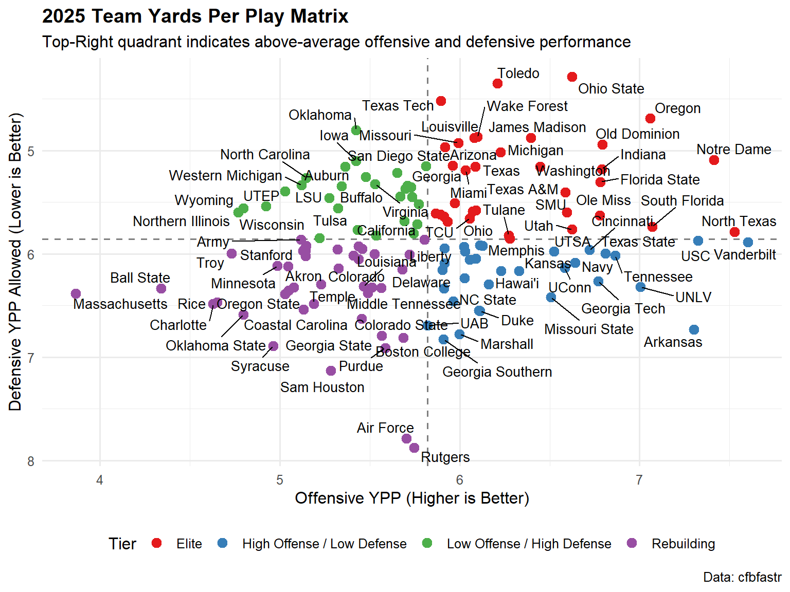
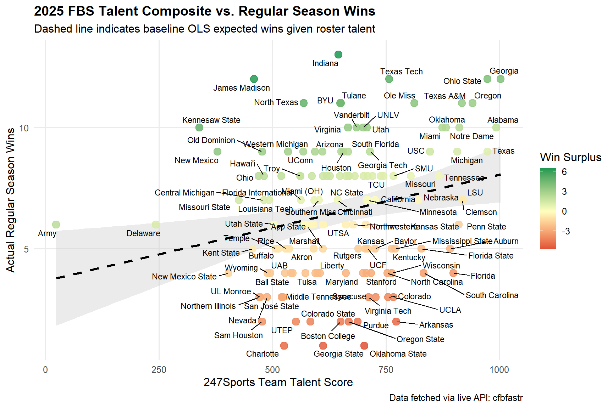

Show R Code
library(reticulate)
Sys.setenv(RETICULATE_PYTHON = "C:\\Users\\mschuck1\\AppData\\Local\\Programs\\Python\\Python313\\python.exe")nflfastRSPOA 4001/ItCS 5010: American Football Analytics
In advanced sports analytics, play-by-play data provides the granular foundation needed to evaluate team efficiency, player performance, and tactical decisions. In this lab, we utilize nflfastR, an R library that provides fast access to cleaned NFL play-by-play data embedded with advanced statistical metrics.
Slight digression to test some python usage in this Quarto markdown file.
library(reticulate)
Sys.setenv(RETICULATE_PYTHON = "C:\\Users\\mschuck1\\AppData\\Local\\Programs\\Python\\Python313\\python.exe")print("world")worldEnsure you have the required packages installed before running this document:
# Uncomment if packages are not yet installed:
# install.packages(c("tidyverse", "nflfastR", "nflplotR", "gt", "knitr"))
library(tidyverse)
library(nflfastR)
library(nflplotR)
library(gt)
library(knitr)
# Set global option to avoid scientific notation in printouts
options(scipen = 999)In the interest of speed, I’ve only taken regular season data from the first 4 weeks of the 2025 season. Actually, I’ve taken the full 2025 play by play and I’ve
# Fetch 2025 play-by-play data
raw_pbp_2025 <- nflfastR::load_pbp(2025)
# Filter for Weeks 1-4 regular season scrimmage plays
pbp_w1_4 <- raw_pbp_2025 |>
filter(
season_type == "REG",
week <= 4,
!is.na(posteam),
# Ensure there is an offensive team
play_type %in% c("pass", "run") | pass == 1 | rush == 1,
!is.na(epa) # Retain valid EPA values
)
# Inspect dataset dimensions
cat("Dataset dimensions (rows x cols):", dim(pbp_w1_4), "\n")Dataset dimensions (rows x cols): 8149 372 What variables are available to us
names(pbp_w1_4) [1] "play_id"
[2] "game_id"
[3] "old_game_id"
[4] "home_team"
[5] "away_team"
[6] "season_type"
[7] "week"
[8] "posteam"
[9] "posteam_type"
[10] "defteam"
[11] "side_of_field"
[12] "yardline_100"
[13] "game_date"
[14] "quarter_seconds_remaining"
[15] "half_seconds_remaining"
[16] "game_seconds_remaining"
[17] "game_half"
[18] "quarter_end"
[19] "drive"
[20] "sp"
[21] "qtr"
[22] "down"
[23] "goal_to_go"
[24] "time"
[25] "yrdln"
[26] "ydstogo"
[27] "ydsnet"
[28] "desc"
[29] "play_type"
[30] "yards_gained"
[31] "shotgun"
[32] "no_huddle"
[33] "qb_dropback"
[34] "qb_kneel"
[35] "qb_spike"
[36] "qb_scramble"
[37] "pass_length"
[38] "pass_location"
[39] "air_yards"
[40] "yards_after_catch"
[41] "run_location"
[42] "run_gap"
[43] "field_goal_result"
[44] "kick_distance"
[45] "extra_point_result"
[46] "two_point_conv_result"
[47] "home_timeouts_remaining"
[48] "away_timeouts_remaining"
[49] "timeout"
[50] "timeout_team"
[51] "td_team"
[52] "td_player_name"
[53] "td_player_id"
[54] "posteam_timeouts_remaining"
[55] "defteam_timeouts_remaining"
[56] "total_home_score"
[57] "total_away_score"
[58] "posteam_score"
[59] "defteam_score"
[60] "score_differential"
[61] "posteam_score_post"
[62] "defteam_score_post"
[63] "score_differential_post"
[64] "no_score_prob"
[65] "opp_fg_prob"
[66] "opp_safety_prob"
[67] "opp_td_prob"
[68] "fg_prob"
[69] "safety_prob"
[70] "td_prob"
[71] "extra_point_prob"
[72] "two_point_conversion_prob"
[73] "ep"
[74] "epa"
[75] "total_home_epa"
[76] "total_away_epa"
[77] "total_home_rush_epa"
[78] "total_away_rush_epa"
[79] "total_home_pass_epa"
[80] "total_away_pass_epa"
[81] "air_epa"
[82] "yac_epa"
[83] "comp_air_epa"
[84] "comp_yac_epa"
[85] "total_home_comp_air_epa"
[86] "total_away_comp_air_epa"
[87] "total_home_comp_yac_epa"
[88] "total_away_comp_yac_epa"
[89] "total_home_raw_air_epa"
[90] "total_away_raw_air_epa"
[91] "total_home_raw_yac_epa"
[92] "total_away_raw_yac_epa"
[93] "wp"
[94] "def_wp"
[95] "home_wp"
[96] "away_wp"
[97] "wpa"
[98] "vegas_wpa"
[99] "vegas_home_wpa"
[100] "home_wp_post"
[101] "away_wp_post"
[102] "vegas_wp"
[103] "vegas_home_wp"
[104] "total_home_rush_wpa"
[105] "total_away_rush_wpa"
[106] "total_home_pass_wpa"
[107] "total_away_pass_wpa"
[108] "air_wpa"
[109] "yac_wpa"
[110] "comp_air_wpa"
[111] "comp_yac_wpa"
[112] "total_home_comp_air_wpa"
[113] "total_away_comp_air_wpa"
[114] "total_home_comp_yac_wpa"
[115] "total_away_comp_yac_wpa"
[116] "total_home_raw_air_wpa"
[117] "total_away_raw_air_wpa"
[118] "total_home_raw_yac_wpa"
[119] "total_away_raw_yac_wpa"
[120] "punt_blocked"
[121] "first_down_rush"
[122] "first_down_pass"
[123] "first_down_penalty"
[124] "third_down_converted"
[125] "third_down_failed"
[126] "fourth_down_converted"
[127] "fourth_down_failed"
[128] "incomplete_pass"
[129] "touchback"
[130] "interception"
[131] "punt_inside_twenty"
[132] "punt_in_endzone"
[133] "punt_out_of_bounds"
[134] "punt_downed"
[135] "punt_fair_catch"
[136] "kickoff_inside_twenty"
[137] "kickoff_in_endzone"
[138] "kickoff_out_of_bounds"
[139] "kickoff_downed"
[140] "kickoff_fair_catch"
[141] "fumble_forced"
[142] "fumble_not_forced"
[143] "fumble_out_of_bounds"
[144] "solo_tackle"
[145] "safety"
[146] "penalty"
[147] "tackled_for_loss"
[148] "fumble_lost"
[149] "own_kickoff_recovery"
[150] "own_kickoff_recovery_td"
[151] "qb_hit"
[152] "rush_attempt"
[153] "pass_attempt"
[154] "sack"
[155] "touchdown"
[156] "pass_touchdown"
[157] "rush_touchdown"
[158] "return_touchdown"
[159] "extra_point_attempt"
[160] "two_point_attempt"
[161] "field_goal_attempt"
[162] "kickoff_attempt"
[163] "punt_attempt"
[164] "fumble"
[165] "complete_pass"
[166] "assist_tackle"
[167] "lateral_reception"
[168] "lateral_rush"
[169] "lateral_return"
[170] "lateral_recovery"
[171] "passer_player_id"
[172] "passer_player_name"
[173] "passing_yards"
[174] "receiver_player_id"
[175] "receiver_player_name"
[176] "receiving_yards"
[177] "rusher_player_id"
[178] "rusher_player_name"
[179] "rushing_yards"
[180] "lateral_receiver_player_id"
[181] "lateral_receiver_player_name"
[182] "lateral_receiving_yards"
[183] "lateral_rusher_player_id"
[184] "lateral_rusher_player_name"
[185] "lateral_rushing_yards"
[186] "lateral_sack_player_id"
[187] "lateral_sack_player_name"
[188] "interception_player_id"
[189] "interception_player_name"
[190] "lateral_interception_player_id"
[191] "lateral_interception_player_name"
[192] "punt_returner_player_id"
[193] "punt_returner_player_name"
[194] "lateral_punt_returner_player_id"
[195] "lateral_punt_returner_player_name"
[196] "kickoff_returner_player_name"
[197] "kickoff_returner_player_id"
[198] "lateral_kickoff_returner_player_id"
[199] "lateral_kickoff_returner_player_name"
[200] "punter_player_id"
[201] "punter_player_name"
[202] "kicker_player_name"
[203] "kicker_player_id"
[204] "own_kickoff_recovery_player_id"
[205] "own_kickoff_recovery_player_name"
[206] "blocked_player_id"
[207] "blocked_player_name"
[208] "tackle_for_loss_1_player_id"
[209] "tackle_for_loss_1_player_name"
[210] "tackle_for_loss_2_player_id"
[211] "tackle_for_loss_2_player_name"
[212] "qb_hit_1_player_id"
[213] "qb_hit_1_player_name"
[214] "qb_hit_2_player_id"
[215] "qb_hit_2_player_name"
[216] "forced_fumble_player_1_team"
[217] "forced_fumble_player_1_player_id"
[218] "forced_fumble_player_1_player_name"
[219] "forced_fumble_player_2_team"
[220] "forced_fumble_player_2_player_id"
[221] "forced_fumble_player_2_player_name"
[222] "solo_tackle_1_team"
[223] "solo_tackle_2_team"
[224] "solo_tackle_1_player_id"
[225] "solo_tackle_2_player_id"
[226] "solo_tackle_1_player_name"
[227] "solo_tackle_2_player_name"
[228] "assist_tackle_1_player_id"
[229] "assist_tackle_1_player_name"
[230] "assist_tackle_1_team"
[231] "assist_tackle_2_player_id"
[232] "assist_tackle_2_player_name"
[233] "assist_tackle_2_team"
[234] "assist_tackle_3_player_id"
[235] "assist_tackle_3_player_name"
[236] "assist_tackle_3_team"
[237] "assist_tackle_4_player_id"
[238] "assist_tackle_4_player_name"
[239] "assist_tackle_4_team"
[240] "tackle_with_assist"
[241] "tackle_with_assist_1_player_id"
[242] "tackle_with_assist_1_player_name"
[243] "tackle_with_assist_1_team"
[244] "tackle_with_assist_2_player_id"
[245] "tackle_with_assist_2_player_name"
[246] "tackle_with_assist_2_team"
[247] "pass_defense_1_player_id"
[248] "pass_defense_1_player_name"
[249] "pass_defense_2_player_id"
[250] "pass_defense_2_player_name"
[251] "fumbled_1_team"
[252] "fumbled_1_player_id"
[253] "fumbled_1_player_name"
[254] "fumbled_2_player_id"
[255] "fumbled_2_player_name"
[256] "fumbled_2_team"
[257] "fumble_recovery_1_team"
[258] "fumble_recovery_1_yards"
[259] "fumble_recovery_1_player_id"
[260] "fumble_recovery_1_player_name"
[261] "fumble_recovery_2_team"
[262] "fumble_recovery_2_yards"
[263] "fumble_recovery_2_player_id"
[264] "fumble_recovery_2_player_name"
[265] "sack_player_id"
[266] "sack_player_name"
[267] "half_sack_1_player_id"
[268] "half_sack_1_player_name"
[269] "half_sack_2_player_id"
[270] "half_sack_2_player_name"
[271] "return_team"
[272] "return_yards"
[273] "penalty_team"
[274] "penalty_player_id"
[275] "penalty_player_name"
[276] "penalty_yards"
[277] "replay_or_challenge"
[278] "replay_or_challenge_result"
[279] "penalty_type"
[280] "defensive_two_point_attempt"
[281] "defensive_two_point_conv"
[282] "defensive_extra_point_attempt"
[283] "defensive_extra_point_conv"
[284] "safety_player_name"
[285] "safety_player_id"
[286] "season"
[287] "cp"
[288] "cpoe"
[289] "series"
[290] "series_success"
[291] "series_result"
[292] "order_sequence"
[293] "start_time"
[294] "time_of_day"
[295] "stadium"
[296] "weather"
[297] "nfl_api_id"
[298] "play_clock"
[299] "play_deleted"
[300] "play_type_nfl"
[301] "special_teams_play"
[302] "st_play_type"
[303] "end_clock_time"
[304] "end_yard_line"
[305] "fixed_drive"
[306] "fixed_drive_result"
[307] "drive_real_start_time"
[308] "drive_play_count"
[309] "drive_time_of_possession"
[310] "drive_first_downs"
[311] "drive_inside20"
[312] "drive_ended_with_score"
[313] "drive_quarter_start"
[314] "drive_quarter_end"
[315] "drive_yards_penalized"
[316] "drive_start_transition"
[317] "drive_end_transition"
[318] "drive_game_clock_start"
[319] "drive_game_clock_end"
[320] "drive_start_yard_line"
[321] "drive_end_yard_line"
[322] "drive_play_id_started"
[323] "drive_play_id_ended"
[324] "away_score"
[325] "home_score"
[326] "location"
[327] "result"
[328] "total"
[329] "spread_line"
[330] "total_line"
[331] "div_game"
[332] "roof"
[333] "surface"
[334] "temp"
[335] "wind"
[336] "home_coach"
[337] "away_coach"
[338] "stadium_id"
[339] "game_stadium"
[340] "aborted_play"
[341] "success"
[342] "passer"
[343] "passer_jersey_number"
[344] "rusher"
[345] "rusher_jersey_number"
[346] "receiver"
[347] "receiver_jersey_number"
[348] "pass"
[349] "rush"
[350] "first_down"
[351] "special"
[352] "play"
[353] "passer_id"
[354] "rusher_id"
[355] "receiver_id"
[356] "name"
[357] "jersey_number"
[358] "id"
[359] "fantasy_player_name"
[360] "fantasy_player_id"
[361] "fantasy"
[362] "fantasy_id"
[363] "out_of_bounds"
[364] "home_opening_kickoff"
[365] "qb_epa"
[366] "xyac_epa"
[367] "xyac_mean_yardage"
[368] "xyac_median_yardage"
[369] "xyac_success"
[370] "xyac_fd"
[371] "xpass"
[372] "pass_oe" Only 370 features/variables per play.
Let’s take a look at the first 6 rows of these data
head(pbp_w1_4)# A tibble: 6 × 372
play_id game_id old_game_id home_team away_team season_type week posteam
<dbl> <chr> <chr> <chr> <chr> <chr> <int> <chr>
1 63 2025_01_ARI… 2025090705 NO ARI REG 1 ARI
2 85 2025_01_ARI… 2025090705 NO ARI REG 1 ARI
3 115 2025_01_ARI… 2025090705 NO ARI REG 1 ARI
4 135 2025_01_ARI… 2025090705 NO ARI REG 1 ARI
5 166 2025_01_ARI… 2025090705 NO ARI REG 1 ARI
6 214 2025_01_ARI… 2025090705 NO ARI REG 1 NO
# ℹ 364 more variables: posteam_type <chr>, defteam <chr>, side_of_field <chr>,
# yardline_100 <dbl>, game_date <chr>, quarter_seconds_remaining <dbl>,
# half_seconds_remaining <dbl>, game_seconds_remaining <dbl>,
# game_half <chr>, quarter_end <dbl>, drive <dbl>, sp <dbl>, qtr <dbl>,
# down <dbl>, goal_to_go <dbl>, time <chr>, yrdln <chr>, ydstogo <dbl>,
# ydsnet <dbl>, desc <chr>, play_type <chr>, yards_gained <dbl>,
# shotgun <dbl>, no_huddle <dbl>, qb_dropback <dbl>, qb_kneel <dbl>, …The next set of code aggregates all of the play by play data by team. We get some variables based upon expected points added (EPA) per play. We do this aggregation by offense and defense then join them back together.
#Offensive Aggregation (posteam)
offense_summary <- pbp_w1_4 |>
group_by(posteam) |>
summarize(
off_plays = n(),
off_epa_per_play = mean(epa, na.rm = TRUE),
pass_epa = mean(epa[pass == 1], na.rm = TRUE),
rush_epa = mean(epa[rush == 1], na.rm = TRUE),
off_success_rate = mean(success, na.rm = TRUE),
dropback_pct = mean(pass == 1, na.rm = TRUE),
.groups = "drop"
)
# Defensive Aggregation (defteam)
defense_summary <- pbp_w1_4 |>
group_by(defteam) |>
summarize(
def_plays = n(),
def_epa_allowed = mean(epa, na.rm = TRUE),
def_pass_epa_allowed = mean(epa[pass == 1], na.rm = TRUE),
def_rush_epa_allowed = mean(epa[rush == 1], na.rm = TRUE),
def_success_rate_allowed = mean(success, na.rm = TRUE),
.groups = "drop"
)
# Join Offense & Defense into a single Master Team Summary
team_summary <- offense_summary |>
inner_join(defense_summary, by = c("posteam" = "defteam")) |>
rename(team = posteam) |>
arrange(desc(off_epa_per_play))
# Display top 5 teams by Offensive EPA
head(team_summary, 5) |> kable()| team | off_plays | off_epa_per_play | pass_epa | rush_epa | off_success_rate | dropback_pct | def_plays | def_epa_allowed | def_pass_epa_allowed | def_rush_epa_allowed | def_success_rate_allowed |
|---|---|---|---|---|---|---|---|---|---|---|---|
| BUF | 268 | 0.2295010 | 0.3319893 | 0.0910520 | 0.4888060 | 0.5746269 | 226 | 0.0116128 | -0.0233997 | 0.0557285 | 0.4203540 |
| GB | 259 | 0.1745451 | 0.3333542 | -0.0306420 | 0.4826255 | 0.5637066 | 268 | 0.0093500 | 0.0521050 | -0.0876309 | 0.4216418 |
| IND | 258 | 0.1526518 | 0.2391547 | 0.0450875 | 0.4961240 | 0.5542636 | 248 | -0.0238408 | 0.0105811 | -0.1002843 | 0.4758065 |
| DAL | 292 | 0.1460041 | 0.2064610 | 0.0263242 | 0.4965753 | 0.6643836 | 265 | 0.2613647 | 0.4419810 | -0.0138603 | 0.5056604 |
| DET | 250 | 0.1414695 | 0.2882702 | -0.0281105 | 0.4880000 | 0.5360000 | 238 | -0.0751622 | 0.0160272 | -0.2278276 | 0.3823529 |
#Display top 6 teams by Defenseive EPA
team_summary<- team_summary |>
arrange(def_epa_allowed)
head(team_summary, 6) |> kable (digits=3)| team | off_plays | off_epa_per_play | pass_epa | rush_epa | off_success_rate | dropback_pct | def_plays | def_epa_allowed | def_pass_epa_allowed | def_rush_epa_allowed | def_success_rate_allowed |
|---|---|---|---|---|---|---|---|---|---|---|---|
| MIN | 238 | -0.076 | -0.102 | -0.033 | 0.445 | 0.618 | 239 | -0.142 | -0.272 | 0.016 | 0.431 |
| LAC | 267 | 0.028 | 0.096 | -0.118 | 0.457 | 0.682 | 257 | -0.100 | -0.101 | -0.098 | 0.377 |
| JAX | 267 | 0.029 | 0.053 | -0.007 | 0.446 | 0.588 | 259 | -0.099 | -0.091 | -0.117 | 0.402 |
| DEN | 262 | 0.048 | 0.106 | -0.049 | 0.420 | 0.622 | 261 | -0.096 | -0.076 | -0.132 | 0.387 |
| LA | 255 | 0.070 | 0.150 | -0.049 | 0.486 | 0.600 | 255 | -0.096 | -0.121 | -0.053 | 0.404 |
| DET | 250 | 0.141 | 0.288 | -0.028 | 0.488 | 0.536 | 238 | -0.075 | 0.016 | -0.228 | 0.382 |
From the data above, which was the third best team on offensive EPA/play from these data?
Let’s make a better table.
#reorder the data for the plot below
team_summary<- team_summary |>
arrange(desc(off_epa_per_play))
# create a pretty table with some coloring
team_summary |>
gt() |>
tab_header(
title = md("**NFL Team Performance Summary: 2025 (Weeks 1–4)**"),
subtitle = "Offensive and Defensive Efficiency Metrics Calculated via nflfastR"
) |>
cols_label(
team = "Team",
off_plays = "Off. Plays",
off_epa_per_play = "Off EPA/Play",
pass_epa = "Pass EPA",
rush_epa = "Rush EPA",
off_success_rate = "Off. Success Rate",
dropback_pct = "Pass Rate",
def_epa_allowed = "Def EPA/Play",
def_success_rate_allowed = "Def. Success Rate"
) |>
cols_hide(columns = c(def_plays, def_pass_epa_allowed, def_rush_epa_allowed)) |>
fmt_number(
columns = c(off_epa_per_play, pass_epa, rush_epa, def_epa_allowed),
decimals = 3
) |>
fmt_percent(
columns = c(off_success_rate, dropback_pct, def_success_rate_allowed),
decimals = 1
) |>
data_color(
columns = off_epa_per_play,
palette = c("#f87171", "#ffffff", "#4ade80")
) |>
tab_source_note(
source_note = "Data Source: nflfastR | Scrimmage plays only (Weeks 1–4, 2025)"
)| NFL Team Performance Summary: 2025 (Weeks 1–4) | ||||||||
| Offensive and Defensive Efficiency Metrics Calculated via nflfastR | ||||||||
| Team | Off. Plays | Off EPA/Play | Pass EPA | Rush EPA | Off. Success Rate | Pass Rate | Def EPA/Play | Def. Success Rate |
|---|---|---|---|---|---|---|---|---|
| BUF | 268 | 0.230 | 0.332 | 0.091 | 48.9% | 57.5% | 0.012 | 42.0% |
| GB | 259 | 0.175 | 0.333 | −0.031 | 48.3% | 56.4% | 0.009 | 42.2% |
| IND | 258 | 0.153 | 0.239 | 0.045 | 49.6% | 55.4% | −0.024 | 47.6% |
| DAL | 292 | 0.146 | 0.206 | 0.026 | 49.7% | 66.4% | 0.261 | 50.6% |
| DET | 250 | 0.141 | 0.288 | −0.028 | 48.8% | 53.6% | −0.075 | 38.2% |
| BAL | 215 | 0.125 | 0.174 | 0.032 | 45.6% | 65.6% | 0.138 | 46.9% |
| KC | 260 | 0.118 | 0.196 | −0.051 | 45.0% | 68.5% | 0.023 | 46.2% |
| WAS | 248 | 0.096 | 0.101 | 0.089 | 46.8% | 62.9% | 0.064 | 43.1% |
| NE | 248 | 0.086 | 0.301 | −0.298 | 44.8% | 64.1% | 0.051 | 47.9% |
| LA | 255 | 0.070 | 0.150 | −0.049 | 48.6% | 60.0% | −0.096 | 40.4% |
| PIT | 219 | 0.059 | 0.121 | −0.031 | 46.6% | 59.4% | 0.044 | 46.0% |
| DEN | 262 | 0.048 | 0.106 | −0.049 | 42.0% | 62.2% | −0.096 | 38.7% |
| TB | 279 | 0.039 | 0.163 | −0.167 | 41.6% | 62.4% | −0.045 | 43.5% |
| SEA | 238 | 0.035 | 0.237 | −0.154 | 45.0% | 48.3% | −0.049 | 42.0% |
| ARI | 253 | 0.030 | 0.109 | −0.131 | 40.7% | 67.2% | 0.001 | 46.2% |
| JAX | 267 | 0.029 | 0.053 | −0.007 | 44.6% | 58.8% | −0.099 | 40.2% |
| PHI | 241 | 0.028 | 0.032 | 0.024 | 44.4% | 53.9% | −0.032 | 44.0% |
| LAC | 267 | 0.028 | 0.096 | −0.118 | 45.7% | 68.2% | −0.100 | 37.7% |
| SF | 270 | 0.022 | 0.145 | −0.197 | 48.9% | 64.1% | −0.021 | 44.0% |
| MIA | 223 | 0.012 | 0.026 | −0.014 | 42.2% | 65.0% | 0.214 | 53.0% |
| ATL | 268 | −0.006 | 0.044 | −0.072 | 44.4% | 56.3% | −0.028 | 44.2% |
| NYJ | 241 | −0.010 | 0.061 | −0.121 | 48.1% | 61.0% | 0.130 | 40.4% |
| NYG | 277 | −0.032 | 0.009 | −0.102 | 42.2% | 62.5% | 0.104 | 48.3% |
| CHI | 259 | −0.035 | 0.089 | −0.252 | 40.5% | 63.7% | 0.032 | 50.0% |
| CAR | 273 | −0.038 | 0.004 | −0.118 | 45.4% | 65.2% | 0.022 | 41.5% |
| NO | 284 | −0.076 | −0.052 | −0.116 | 43.3% | 62.7% | 0.104 | 45.7% |
| MIN | 238 | −0.076 | −0.102 | −0.033 | 44.5% | 61.8% | −0.142 | 43.1% |
| HOU | 243 | −0.076 | −0.052 | −0.116 | 37.4% | 61.7% | −0.072 | 43.0% |
| LV | 248 | −0.107 | −0.016 | −0.244 | 39.9% | 60.1% | −0.007 | 43.0% |
| CLE | 280 | −0.193 | −0.272 | −0.026 | 35.0% | 67.9% | −0.042 | 40.1% |
| CIN | 224 | −0.224 | −0.289 | −0.098 | 39.3% | 65.6% | 0.090 | 47.4% |
| TEN | 242 | −0.237 | −0.286 | −0.137 | 36.4% | 66.9% | 0.152 | 45.7% |
| Data Source: nflfastR | Scrimmage plays only (Weeks 1–4, 2025) | ||||||||
Let’s visualize some of these data.
# Compute tier averages for reference lines
avg_off_epa <- mean(team_summary$off_epa_per_play, na.rm = TRUE)
avg_def_epa <- mean(team_summary$def_epa_allowed, na.rm = TRUE)
ggplot(team_summary, aes(x = off_epa_per_play, y = def_epa_allowed)) +
# Quadrant Mean Lines
geom_hline(yintercept = avg_def_epa, linetype = "dashed", color = "gray50", linewidth = 0.6) +
geom_vline(xintercept = avg_off_epa, linetype = "dashed", color = "gray50", linewidth = 0.6) +
# Official NFL Team Logos
geom_nfl_logos(aes(team_abbr = team), width = 0.055, alpha = 0.9) +
# Invert Y-axis so lower EPA allowed (better defense) is higher up
scale_y_reverse() +
labs(
title = "2025 NFL Team Tier Breakdown (Weeks 1–4)",
subtitle = "Offensive Efficiency vs. Defensive Efficiency",
x = "Offensive EPA per Play (Higher = Better Offense)",
y = "Defensive EPA per Play Allowed (Lower = Better Defense)",
caption = "Chart: Senior Data Science | Data: nflfastR"
) +
theme_minimal(base_size = 13) +
theme(
plot.title = element_text(face = "bold", size = 16, hjust = 0.5),
plot.subtitle = element_text(color = "gray30", hjust = 0.5),
panel.grid.minor = element_blank()
)
Note that the plot above has an unusual y-axis. Why is that?
In sports analytics, plays occurring when the win probability is near 0% or 100% (“garbage time”) can skew team metrics. Modify the filtering logic to exclude plays where win probability < 0.05 or > 0.95. How does removing garbage time affect the top 3 offensive teams?
# Student Workspace: Filter out garbage time
# TODO: Compute updated team summaries and compare resultsIs this the best definition of garbage time? How might you define garbage time?
So we are going back to the play by play data from 2025 and now we are going to look at some drive summaries.
pbp_clean <- pbp_w1_4 %>%
filter(
!is.na(drive),
!is.na(epa),
play == 1, # Excludes non-play events / dead-ball fouls
play_type %in% c("run", "pass") # Restricts to offensive play attempts
)Next we group the data and since drives are numbered from the beginning of each game, we have to group by game and drive.
drive_level_data <- pbp_clean %>%
group_by(game_id, drive, posteam, defteam) %>%
summarize(
drive_total_epa = sum(epa, na.rm = TRUE),
drive_mean_epa = mean(epa, na.rm = TRUE),
play_count = n(),
drive_result = first(fixed_drive_result),
.groups = "drop"
)Next take the drive level data and get some offensive and defensive summaries
offense_drive_summary <- drive_level_data %>%
filter(!is.na(posteam)) %>%
group_by(posteam) %>%
summarize(
drives = n(),
mean_drive_epa = mean(drive_total_epa, na.rm = TRUE),
median_drive_epa = median(drive_total_epa, na.rm = TRUE),
total_off_epa = sum(drive_total_epa, na.rm = TRUE),
avg_plays_per_dr = mean(play_count, na.rm = TRUE)
) %>%
arrange(desc(mean_drive_epa))
head(offense_drive_summary, 6) |> kable (digits=3)| posteam | drives | mean_drive_epa | median_drive_epa | total_off_epa | avg_plays_per_dr |
|---|---|---|---|---|---|
| BUF | 41 | 1.409 | 0.900 | 57.754 | 6.220 |
| IND | 37 | 1.166 | 0.878 | 43.159 | 6.541 |
| GB | 39 | 1.048 | -0.267 | 40.887 | 6.282 |
| DET | 43 | 0.891 | -0.366 | 38.330 | 5.605 |
| KC | 36 | 0.837 | 0.077 | 30.140 | 6.861 |
| DAL | 42 | 0.818 | -0.113 | 34.340 | 6.500 |
defense_drive_summary <- drive_level_data %>%
filter(!is.na(defteam)) %>%
group_by(defteam) %>%
summarize(
drives_def = n(),
mean_epa_allowed = mean(drive_total_epa, na.rm = TRUE),
median_epa_allow = median(drive_total_epa, na.rm = TRUE),
total_def_epa = sum(drive_total_epa, na.rm = TRUE),
avg_plays_allowed = mean(play_count, na.rm = TRUE)
) %>%
arrange(mean_epa_allowed) # Lower/negative EPA allowed indicates higher defensive
head(defense_drive_summary, 6) |> kable (digits=3)| defteam | drives_def | mean_epa_allowed | median_epa_allow | total_def_epa | avg_plays_allowed |
|---|---|---|---|---|---|
| MIN | 44 | -0.843 | -1.359 | -37.084 | 5.182 |
| JAX | 43 | -0.746 | -1.648 | -32.089 | 5.721 |
| LAC | 40 | -0.633 | -1.219 | -25.331 | 6.000 |
| DEN | 43 | -0.613 | -1.148 | -26.367 | 5.674 |
| LA | 41 | -0.476 | -1.337 | -19.518 | 5.829 |
| DET | 44 | -0.475 | -1.674 | -20.921 | 5.205 |
Find another metric, not EPA, and calculate the summaries (mean, median, sum) for each drive in the raw_pbp_2025 dataset. Then do it for only pass plays. Which team was the best on your metric for all plays? for only pass plays?
Below we do some practice with loading, summarizing and visualizing the college football data.
Using cfbfastr::load_cfb_pbp() fetches pre-processed play-by-play data directly without requiring API key authentication. We aggregate play-level yardage to quantify offensive and defensive Yards Per Play (YPP) across the 2025 season.
library(cfbfastR)
library(ggrepel)
# Load full 2024 play-by-play dataset
pbp_2025 <- load_cfb_pbp(2025) |>
filter(home_team_division=="fbs" & away_team_division=="fbs")|>
filter(rush == 1 | pass == 1, !is.na(yards_gained)) Note pbp for all college is a big file and includes teams from FBS, FCS, D2 and D3. We’re only interested in FBS v FBS games today.
Below we get the yards per play gained for offenses.
# Compute offensive YPP by team
off_ypp <- pbp_2025 |>
group_by(team = offense_play, conference = offense_conference) |>
summarize(
off_plays = n(),
off_ypp = mean(yards_gained),
.groups = "drop"
) |>
arrange(desc(off_ypp))
# Lets look at who is `best` on this metric
head(off_ypp,15)|>kable(digits=2)| team | conference | off_plays | off_ypp |
|---|---|---|---|
| Vanderbilt | SEC | 742 | 7.60 |
| North Texas | American Athletic | 927 | 7.53 |
| Notre Dame | FBS Independents | 750 | 7.41 |
| USC | Big Ten | 831 | 7.32 |
| Arkansas | SEC | 705 | 7.30 |
| South Florida | American Athletic | 854 | 7.07 |
| Oregon | Big Ten | 897 | 7.06 |
| UNLV | Mountain West | 837 | 7.00 |
| Tennessee | SEC | 824 | 6.86 |
| Texas State | Sun Belt | 888 | 6.81 |
| Old Dominion | Sun Belt | 814 | 6.79 |
| Indiana | Big Ten | 996 | 6.79 |
| Florida State | ACC | 762 | 6.78 |
| Ole Miss | SEC | 1015 | 6.78 |
| Georgia Tech | ACC | 794 | 6.77 |
Below we get the yards per play gained against defenses.
# Compute defensive YPP allowed by team
def_ypp <- pbp_2025 |>
group_by(team = defense_play) |>
summarize(
def_plays = n(),
def_ypp = mean(yards_gained),
.groups = "drop"
)|>
arrange(def_ypp)
# Lets look at who is best
head(def_ypp,15)|>kable(digits=2)| team | def_plays | def_ypp |
|---|---|---|
| Ohio State | 707 | 4.29 |
| Toledo | 763 | 4.35 |
| Texas Tech | 853 | 4.52 |
| Oregon | 861 | 4.69 |
| Oklahoma | 778 | 4.80 |
| Wake Forest | 838 | 4.87 |
| Louisville | 780 | 4.88 |
| James Madison | 772 | 4.88 |
| Missouri | 725 | 4.93 |
| Old Dominion | 839 | 4.94 |
| San Diego State | 818 | 4.97 |
| Michigan | 853 | 5.02 |
| Notre Dame | 811 | 5.09 |
| Iowa | 726 | 5.10 |
| Arizona | 800 | 5.14 |
Below we join and classify the teams into tiers.
# Join metrics and classify into performance tiers
all_ypp <- off_ypp |>
inner_join(def_ypp, by = "team") |>
mutate(
net_ypp = off_ypp - def_ypp,
tier = case_when(
off_ypp > mean(off_ypp) & def_ypp < mean(def_ypp) ~ "Elite",
off_ypp > mean(off_ypp) & def_ypp >= mean(def_ypp) ~ "High Offense / Low Defense",
off_ypp <= mean(off_ypp) & def_ypp < mean(def_ypp) ~ "Low Offense / High Defense",
TRUE ~ "Rebuilding"
)
) |>
arrange(desc(net_ypp))Print out the data in a nice format.
# Render structured output table
all_ypp |>
select(team, off_ypp, def_ypp, net_ypp, tier) |>
gt() |>
tab_header(
title = "2025 FBS Yards Per Play Summary",
subtitle = "Evaluated on all rushing and passing attempts"
) |>
cols_label(
team = "Team",
off_ypp = "Offensive YPP",
def_ypp = "Defensive YPP",
net_ypp = "Net YPP Margin",
tier = "Performance Tier"
) |>
fmt_number(columns = where(is.numeric), decimals = 2)| 2025 FBS Yards Per Play Summary | ||||
| Evaluated on all rushing and passing attempts | ||||
| Team | Offensive YPP | Defensive YPP | Net YPP Margin | Performance Tier |
|---|---|---|---|---|
| Oregon | 7.06 | 4.69 | 2.37 | Elite |
| Ohio State | 6.62 | 4.29 | 2.34 | Elite |
| Notre Dame | 7.41 | 5.09 | 2.32 | Elite |
| Toledo | 6.21 | 4.35 | 1.86 | Elite |
| Old Dominion | 6.79 | 4.94 | 1.85 | Elite |
| North Texas | 7.53 | 5.79 | 1.74 | Elite |
| Vanderbilt | 7.60 | 5.88 | 1.72 | High Offense / Low Defense |
| Indiana | 6.79 | 5.18 | 1.61 | Elite |
| James Madison | 6.40 | 4.88 | 1.52 | Elite |
| Florida State | 6.78 | 5.30 | 1.48 | Elite |
| USC | 7.32 | 5.87 | 1.45 | High Offense / Low Defense |
| Texas Tech | 5.90 | 4.52 | 1.38 | Elite |
| South Florida | 7.07 | 5.74 | 1.33 | Elite |
| Washington | 6.45 | 5.15 | 1.29 | Elite |
| Wake Forest | 6.10 | 4.87 | 1.23 | Elite |
| Michigan | 6.23 | 5.02 | 1.21 | Elite |
| Louisville | 6.08 | 4.88 | 1.20 | Elite |
| Texas A&M | 6.59 | 5.40 | 1.18 | Elite |
| Ole Miss | 6.78 | 5.63 | 1.15 | Elite |
| Missouri | 5.99 | 4.93 | 1.07 | Elite |
| SMU | 6.60 | 5.60 | 1.00 | Elite |
| San Diego State | 5.92 | 4.97 | 0.95 | Elite |
| Texas | 6.09 | 5.16 | 0.93 | Elite |
| Utah | 6.63 | 5.76 | 0.86 | Elite |
| Tennessee | 6.86 | 6.02 | 0.85 | High Offense / Low Defense |
| Miami | 6.03 | 5.19 | 0.85 | Elite |
| Arizona | 5.96 | 5.14 | 0.82 | Elite |
| Texas State | 6.81 | 6.00 | 0.81 | High Offense / Low Defense |
| Cincinnati | 6.72 | 5.96 | 0.76 | High Offense / Low Defense |
| UNLV | 7.00 | 6.32 | 0.68 | High Offense / Low Defense |
| Georgia | 5.81 | 5.15 | 0.66 | Low Offense / High Defense |
| Oklahoma | 5.42 | 4.80 | 0.62 | Low Offense / High Defense |
| Arkansas | 7.30 | 6.73 | 0.57 | High Offense / Low Defense |
| Navy | 6.64 | 6.08 | 0.56 | High Offense / Low Defense |
| UTSA | 6.52 | 5.97 | 0.55 | High Offense / Low Defense |
| New Mexico | 6.09 | 5.58 | 0.52 | Elite |
| Georgia Tech | 6.77 | 6.26 | 0.51 | High Offense / Low Defense |
| Kansas State | 6.07 | 5.59 | 0.49 | Elite |
| Pittsburgh | 5.97 | 5.51 | 0.46 | Elite |
| Tulane | 6.27 | 5.82 | 0.45 | Elite |
| UConn | 6.58 | 6.14 | 0.45 | High Offense / Low Defense |
| Arizona State | 5.65 | 5.21 | 0.44 | Low Offense / High Defense |
| Memphis | 6.28 | 5.85 | 0.43 | Elite |
| TCU | 6.06 | 5.66 | 0.40 | Elite |
| Penn State | 5.73 | 5.35 | 0.38 | Low Offense / High Defense |
| Washington State | 5.71 | 5.34 | 0.37 | Low Offense / High Defense |
| Miami (OH) | 5.70 | 5.37 | 0.33 | Low Offense / High Defense |
| Iowa | 5.42 | 5.10 | 0.32 | Low Offense / High Defense |
| Houston | 5.73 | 5.45 | 0.29 | Low Offense / High Defense |
| BYU | 5.91 | 5.63 | 0.28 | Elite |
| Illinois | 5.89 | 5.62 | 0.28 | Elite |
| Clemson | 5.87 | 5.61 | 0.26 | Elite |
| UCF | 5.77 | 5.52 | 0.25 | Low Offense / High Defense |
| East Carolina | 5.93 | 5.69 | 0.24 | Elite |
| Alabama | 5.67 | 5.44 | 0.23 | Low Offense / High Defense |
| Fresno State | 5.48 | 5.25 | 0.22 | Low Offense / High Defense |
| Auburn | 5.36 | 5.16 | 0.21 | Low Offense / High Defense |
| Southern Miss | 6.13 | 5.92 | 0.21 | High Offense / Low Defense |
| Virginia | 5.53 | 5.33 | 0.20 | Low Offense / High Defense |
| Ohio | 6.11 | 5.92 | 0.20 | High Offense / Low Defense |
| Kansas | 6.33 | 6.17 | 0.16 | High Offense / Low Defense |
| Western Kentucky | 6.02 | 5.93 | 0.09 | High Offense / Low Defense |
| Missouri State | 6.51 | 6.42 | 0.09 | High Offense / Low Defense |
| San José State | 6.23 | 6.16 | 0.07 | High Offense / Low Defense |
| Utah State | 6.03 | 5.98 | 0.05 | High Offense / Low Defense |
| South Carolina | 5.76 | 5.71 | 0.05 | Low Offense / High Defense |
| Kennesaw State | 6.09 | 6.04 | 0.05 | High Offense / Low Defense |
| Iowa State | 5.69 | 5.68 | 0.01 | Low Offense / High Defense |
| Baylor | 6.05 | 6.06 | 0.00 | High Offense / Low Defense |
| Buffalo | 5.34 | 5.34 | 0.00 | Low Offense / High Defense |
| Liberty | 5.91 | 5.95 | −0.03 | High Offense / Low Defense |
| Boise State | 5.74 | 5.80 | −0.06 | Low Offense / High Defense |
| Nebraska | 5.80 | 5.86 | −0.06 | Rebuilding |
| North Carolina | 5.15 | 5.26 | −0.12 | Low Offense / High Defense |
| Hawai'i | 6.16 | 6.30 | −0.13 | High Offense / Low Defense |
| Florida Atlantic | 5.92 | 6.09 | −0.18 | High Offense / Low Defense |
| LSU | 5.28 | 5.46 | −0.18 | Low Offense / High Defense |
| Eastern Michigan | 6.03 | 6.24 | −0.21 | High Offense / Low Defense |
| Western Michigan | 5.12 | 5.33 | −0.21 | Low Offense / High Defense |
| Tulsa | 5.32 | 5.56 | −0.23 | Low Offense / High Defense |
| Jacksonville State | 5.90 | 6.15 | −0.25 | High Offense / Low Defense |
| Louisiana Tech | 5.72 | 6.00 | −0.29 | Rebuilding |
| UL Monroe | 5.53 | 5.82 | −0.29 | Low Offense / High Defense |
| California | 5.43 | 5.76 | −0.33 | Low Offense / High Defense |
| UTEP | 5.03 | 5.39 | −0.36 | Low Offense / High Defense |
| Delaware | 5.91 | 6.34 | −0.42 | High Offense / Low Defense |
| NC State | 6.11 | 6.55 | −0.44 | High Offense / Low Defense |
| Duke | 6.11 | 6.55 | −0.44 | High Offense / Low Defense |
| Florida | 5.68 | 6.15 | −0.47 | Rebuilding |
| Maryland | 5.53 | 6.00 | −0.47 | Rebuilding |
| South Alabama | 5.44 | 5.93 | −0.49 | Rebuilding |
| Middle Tennessee | 5.96 | 6.46 | −0.49 | High Offense / Low Defense |
| Kent State | 5.46 | 5.95 | −0.49 | Rebuilding |
| Kentucky | 5.41 | 6.01 | −0.60 | Rebuilding |
| App State | 5.44 | 6.05 | −0.61 | Rebuilding |
| Wisconsin | 4.92 | 5.54 | −0.62 | Low Offense / High Defense |
| Nevada | 5.22 | 5.85 | −0.63 | Low Offense / High Defense |
| Northwestern | 5.32 | 5.96 | −0.64 | Rebuilding |
| Army | 5.12 | 5.86 | −0.74 | Rebuilding |
| Wyoming | 4.80 | 5.56 | −0.76 | Low Offense / High Defense |
| Florida International | 5.56 | 6.33 | −0.76 | Rebuilding |
| Bowling Green | 5.15 | 5.92 | −0.78 | Rebuilding |
| Marshall | 6.00 | 6.78 | −0.78 | High Offense / Low Defense |
| Virginia Tech | 5.51 | 6.32 | −0.81 | Rebuilding |
| Central Michigan | 5.14 | 5.95 | −0.81 | Rebuilding |
| Michigan State | 5.33 | 6.14 | −0.82 | Rebuilding |
| New Mexico State | 5.14 | 5.97 | −0.83 | Rebuilding |
| Northern Illinois | 4.77 | 5.60 | −0.83 | Low Offense / High Defense |
| Arkansas State | 5.13 | 5.97 | −0.84 | Rebuilding |
| Louisiana | 5.47 | 6.32 | −0.85 | Rebuilding |
| UAB | 5.82 | 6.69 | −0.87 | High Offense / Low Defense |
| UCLA | 5.14 | 6.02 | −0.88 | Rebuilding |
| Mississippi State | 5.49 | 6.38 | −0.89 | Rebuilding |
| Georgia Southern | 5.91 | 6.83 | −0.92 | High Offense / Low Defense |
| Colorado | 5.23 | 6.29 | −1.07 | Rebuilding |
| Stanford | 5.05 | 6.12 | −1.07 | Rebuilding |
| Boston College | 5.69 | 6.81 | −1.12 | Rebuilding |
| Minnesota | 4.99 | 6.12 | −1.13 | Rebuilding |
| Colorado State | 5.45 | 6.63 | −1.17 | Rebuilding |
| Georgia State | 5.57 | 6.79 | −1.23 | Rebuilding |
| Akron | 5.08 | 6.32 | −1.24 | Rebuilding |
| Troy | 4.73 | 5.99 | −1.26 | Rebuilding |
| Temple | 5.19 | 6.49 | −1.30 | Rebuilding |
| Oregon State | 5.05 | 6.35 | −1.30 | Rebuilding |
| Purdue | 5.59 | 6.91 | −1.32 | Rebuilding |
| West Virginia | 5.03 | 6.39 | −1.36 | Rebuilding |
| Coastal Carolina | 5.13 | 6.54 | −1.41 | Rebuilding |
| Oklahoma State | 4.80 | 6.59 | −1.79 | Rebuilding |
| Rice | 4.65 | 6.47 | −1.82 | Rebuilding |
| Sam Houston | 5.28 | 7.13 | −1.85 | Rebuilding |
| Charlotte | 4.63 | 6.49 | −1.86 | Rebuilding |
| Syracuse | 4.96 | 6.89 | −1.93 | Rebuilding |
| Ball State | 4.34 | 6.33 | −2.00 | Rebuilding |
| Air Force | 5.70 | 7.79 | −2.08 | Rebuilding |
| Rutgers | 5.75 | 7.88 | −2.13 | Rebuilding |
| Massachusetts | 3.87 | 6.38 | −2.52 | Rebuilding |
Now a slick visualization with ‘repel’ labels to make things readable.
ggplot(all_ypp, aes(x = off_ypp, y = def_ypp)) +
geom_vline(xintercept = mean(all_ypp$off_ypp), linetype = "dashed", color = "gray50") +
geom_hline(yintercept = mean(all_ypp$def_ypp), linetype = "dashed", color = "gray50") +
geom_point(aes(color = tier), size = 3) +
geom_text_repel(aes(label = team), size = 3.5, max.overlaps = 15) +
scale_y_reverse() +
scale_color_brewer(palette = "Set1") +
labs(
title = "2025 Team Yards Per Play Matrix",
subtitle = "Top-Right quadrant indicates above-average offensive and defensive performance",
x = "Offensive YPP (Higher is Better)",
y = "Defensive YPP Allowed (Lower is Better)",
color = "Tier",
caption = "Data: cfbfastr"
) +
theme_minimal(base_size = 12) +
theme(
plot.title = element_text(face = "bold"),
legend.position = "bottom"
)
Repeat the analysis above for another metric. This time only include data from games where the score differential between the two teams was less than 21.
In the code below put your key within the quotes
# Verify API key availability
if (Sys.getenv("CFBD_API_KEY") == "") {
stop("CFBD_API_KEY environment variable not detected.")
}
# Load live API endpoints: 2025 Team Talent Ratings & Game Results
talent_raw <- cfbd_team_talent(year = 2025) |> rename("team"="school")
games_raw <- cfbd_game_info(year = 2025, season_type = "regular")Get wins for each team in 2025
# Calculate regular season wins per team
home_wins <- games_raw |>
filter(!is.na(home_points), home_points > away_points) |>
count(team = home_team, name = "wins")
away_wins <- games_raw |>
filter(!is.na(away_points), away_points > home_points) |>
count(team = away_team, name = "wins")
total_wins <- bind_rows(home_wins, away_wins) |>
group_by(team) |>
summarize(wins = sum(wins), .groups = "drop")# Clean talent scores, join wins, and extract regression residuals
df_analytics <- talent_raw |>
transmute(
team,
talent_score = as.numeric(talent)
) |>
inner_join(total_wins, by = "team") |>
drop_na()# Fit OLS model to derive expected wins and residual performance
model <- lm(wins ~ talent_score, data = df_analytics)
df_analytics <- df_analytics |>
mutate(
expected_wins = predict(model),
win_residual = wins - expected_wins,
efficiency = if_else(win_residual >= 0, "Overperforming", "Underperforming")
) |>
arrange(desc(win_residual))
# Tabulate top 5 overperforming teams relative to talent
df_analytics |>
slice_head(n = 5) |>
gt() |>
tab_header(
title = "Top 5 Talent Overperformers (2024)",
subtitle = "Teams exceeding expected win totals based on 247Sports Composite Talent"
) |>
cols_label(
team = "Team",
talent_score = "Talent Score",
wins = "Actual Wins",
expected_wins = "Expected Wins",
win_residual = "Win Surplus",
efficiency = "Status"
) |>
fmt_number(columns = c(talent_score, expected_wins, win_residual), decimals = 2)| Top 5 Talent Overperformers (2024) | |||||
| Teams exceeding expected win totals based on 247Sports Composite Talent | |||||
| Team | Talent Score | Actual Wins | Expected Wins | Win Surplus | Status |
|---|---|---|---|---|---|
| Indiana | 645.34 | 13 | 6.51 | 6.49 | Overperforming |
| James Madison | 459.53 | 12 | 5.69 | 6.31 | Overperforming |
| Texas Tech | 757.49 | 12 | 7.00 | 5.00 | Overperforming |
| Kennesaw State | 338.87 | 10 | 5.16 | 4.84 | Overperforming |
| North Texas | 569.15 | 11 | 6.17 | 4.83 | Overperforming |
Make a visualization of talent vs Wins with the regression line on the plot
ggplot(df_analytics, aes(x = talent_score, y = wins)) +
geom_smooth(method = "lm", se = TRUE, color = "black", fill = "gray80", linetype = "dashed") +
geom_point(aes(color = win_residual), size = 3.5, alpha = 0.85) +
geom_text_repel(
aes(label = team),
size = 3,
max.overlaps = 12,
box.padding = 0.3
) +
scale_color_gradient2(
low = "#d73027",
mid = "#ffffbf",
high = "#1a9850",
midpoint = 0,
name = "Win Surplus"
) +
labs(
title = "2025 FBS Talent Composite vs. Regular Season Wins",
subtitle = "Dashed line indicates baseline OLS expected wins given roster talent",
x = "247Sports Team Talent Score",
y = "Actual Regular Season Wins",
caption = "Data fetched via live API: cfbfastr"
) +
theme_minimal(base_size = 12) +
theme(
plot.title = element_text(face = "bold"),
panel.grid.minor = element_blank()
)